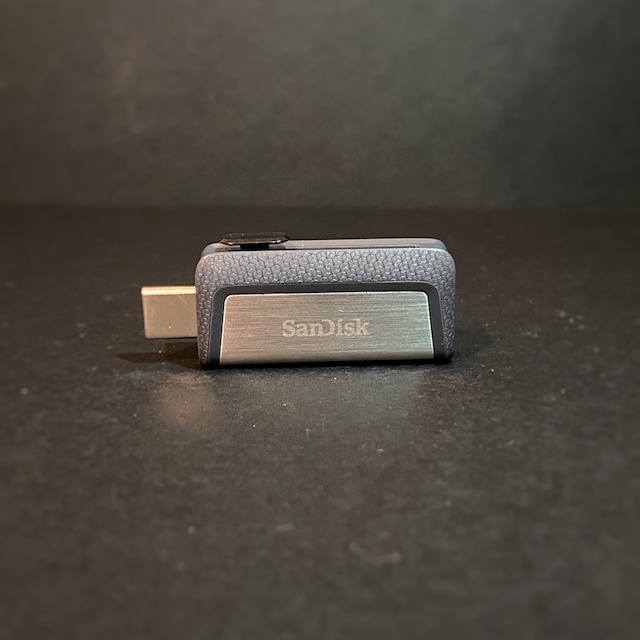
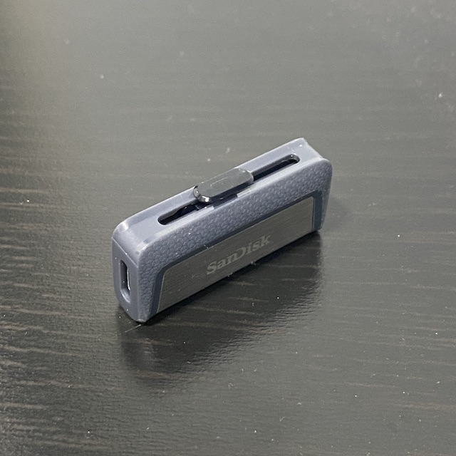
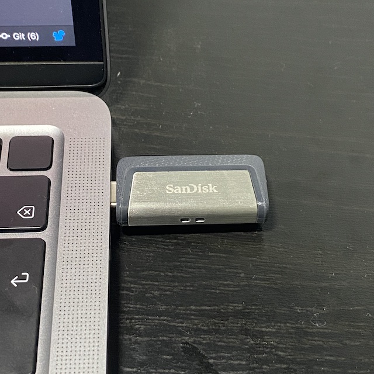

SanDisk Ultra Dual Drive USB Type-C Review
3/9/2020
Introduction
Having USB-C only devices such as the MacBook Pro or mobile phones such as the HTC One Plus 8 with external devices and wanting to transfer files from USB 3.0 ports can be difficult. That’s why we have this dual ended drive to transfer files easier!
Why did we purchase one?
We purchased this product on offer for £7 for this 32GB at our local supermarket. One of the main issue with USB-C ports are they aren’t widely available as the previous USB-A ports, which cause issues of compatibility with older computers/laptops without carry an adapter such as the nonda USB-C adapter.
What’s in the box?
The drive comes package in a tight plastic moulded pack which is difficult to open without extra tools, however it does show off the product well especially if you’re seeing this in first person.
It comes formatted for Android/PC/Mac straight out of the box and it includes their own SanDisk backup software however it isn’t necessary for this product to work.
Design
I was surprised at how small the drive was, this is makes it very portable! It comes in a mainly plastic and metal finish that covers the whole drive when not in use and has 2 small holes for a lanyard/keyring (mine did not come with one).
The metal prevents the plastic from melting due to the heat caused by the drive itself (more on it in the Issues)
Theres a simple mechanical slider to switch between the 2 USB-A and USB-C male ends and there’s a slight satisfying “snatch” to physically let you know the end of the slider for both ends.
Day to day usability
The drive is straight forward to use, just plugging in either side to the correct female end and the drive will appear on your desktop/mobile/tablet in a few seconds.
Putting the drive in your pocket for easy storage is also ideal as it doesn’t take much space or attaching it to your key is another idea through the 2 holes.
Speed
We tested this drive on our 2020 MacBook Pro using Blackmagicdesign Speed Test and we reached 148MB/s read and 60MB/s write which is as advertised. This is sufficient for medium sized files on the go.
Issues
Our main issue is that this drive is it gets relatively hot to the touch (not overheating but quite hot) during short periods of use. The drive remains at this hot temperature whilst being plugged in our MacBook however it does get cool kind of fast.
Conclusion
With this drive being relatively small and compact and its inexpensive price tag for a 128GB (Usually under £20) I can see this being a great bridge USB drive for people slowly moving towards USB-C.
We would recommend this inexpensive drive for quick and fast transfers from your home computer to a work computer where a physical copy is needed. Smaller files can be transferred with cloud services and larger files can be transferred with SSDs for the faster read and write speeds and larger base storage.